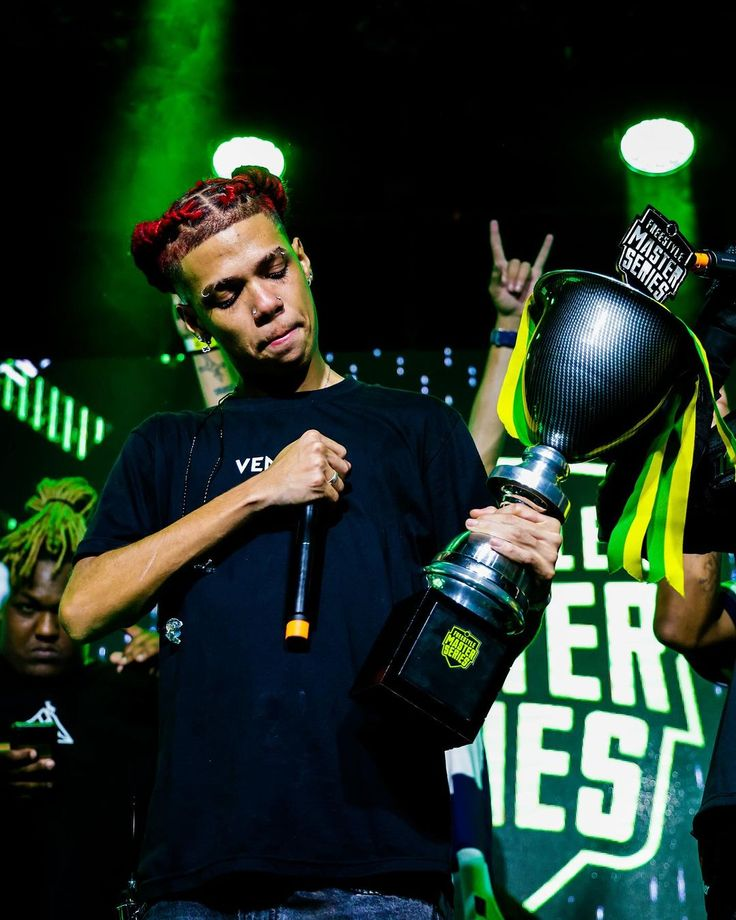

Uma carreira construída nas batalhas
Depois de começar nas batalhas de rima, Jotapê foi conquistando espaço em diferentes competições e passou a ser conhecido por suas participações em grandes eventos da cena.
Durante sua trajetória, participou de batalhas em diferentes cidades e formatos, enfrentando alguns dos principais MCs da cena brasileira.
Principais títulos
Entre os principais resultados de sua carreira estão títulos conquistados em competições importantes de batalha de rima.
- 2021: campeão da BDA 5 Anos, ao lado de Apollo e Big Mike.
- 2023: campeão do Mar de Monstros - Armagedom, ao lado de Barreto.
- 2023: campeão da BDA 7 Anos, ao lado de Neo e Big Mike.
- 2023: campeão do Norte Ragnarok, ao lado de Barreto, Brennuz e Doprê.
- 2024: campeão do Interestadual da Aldeia, em disputa individual.
- 2024: campeão da FMS Brasil, em disputa individual.
- 2025: campeão do Jardim das Rimas, ao lado de Neo e Tavin.
- 2025: campeão do Norte Sparta, ao lado de Bask e Zuluzão.
- 2026: campeão da BDA 10 Anos, ao lado de Apollo e Negrote.
Jotapê e a Batalha da Aldeia
A Batalha da Aldeia é uma das competições mais importantes da trajetória de Jotapê. Ele conquistou o título da BDA 5 Anos, em 2021, e voltou a ser campeão na BDA 7 Anos, em 2023.
Na BDA 7 Anos, além do título com Neo e Big Mike, Jotapê foi escolhido como MVP da edição.
Em 2024, conquistou o Interestadual da Aldeia em disputa individual. A vitória também teve importância para sua carreira musical, pois a premiação possibilitou a produção de um álbum com Papatinho.
Uma marca importante em 2026
Na BDA 10 Anos, Jotapê voltou a conquistar o título, formando equipe com Apollo e Negrote. Com essa vitória, chegou ao seu terceiro título nas edições de aniversário da Batalha da Aldeia.
Prêmios individuais
Além dos títulos conquistados em equipe ou individualmente, Jotapê também recebeu reconhecimento por seu desempenho nas competições.

- MVP da BDA 7 Anos, em 2023.
- X1 do Ano no BDA Awards, em 2024.
- MC da Galera no FMS Brasil Awards, em 2024.
- Melhor Batalha no FMS Brasil Awards, em 2024.
Em 2026, Jotapê também se tornou o único MC a conquistar o prêmio de MVP em duas edições diferentes do aniversário da BDA.
Outras competições
A carreira de Jotapê também possui participações em competições nas quais o resultado não terminou em título. Entre elas estão o Mar de Monstros Interestadual, Estadual SP, BDA 6 Anos, BDA 8 Anos e Coliseu 5 Anos.
Essas participações fazem parte da evolução do MC dentro das batalhas e mostram a quantidade de competições que fizeram parte de sua trajetória.
Da batalha para os palcos
O crescimento nas batalhas também abriu espaço para Jotapê desenvolver sua carreira musical. Suas experiências como MC passaram a influenciar diretamente suas músicas e seus projetos.
Em 2025, lançou o álbum Até a última rima, produzido por Papatinho. O projeto possui 14 faixas e reúne participações de artistas como Emicida, Lulu Santos, L7NNON, Major RD e Lezin.
O que o álbum representa?
O álbum reúne diferentes experiências e temas vividos pelo artista, incluindo identidade, afetividade, racismo, ascensão e outras questões presentes em sua trajetória.